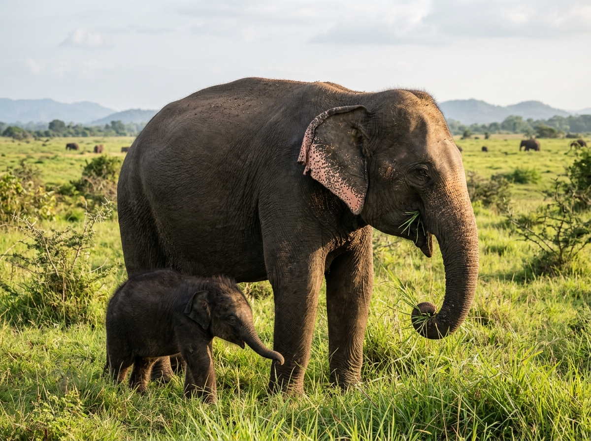

A JOURNEY FROM
RESCUE TO THE WILD
At the edge of Udawalawe National Park, the Elephant Transit Home represents a conservation approach focused on rehabilitating orphaned wild elephant calves.
Established in 1995 under the Department of Wildlife Conservation, the facility was developed to provide care for young elephants that had lost maternal protection and to prepare suitable individuals for a return to natural habitats.
“Its guiding idea is simple: provide the care elephants need, while preserving their opportunity to live as wild animals.”
Care that looks towards a return to nature
Orphaned elephant calves may lose their mothers through accidents, human-elephant conflict, or other circumstances. Young calves can require intensive care and support to survive.
The Elephant Transit Home was established in 1995 to provide a dedicated rehabilitation pathway for orphaned wild calves. Its approach differs from permanent captive management because the intended outcome for suitable elephants is release back into the wild.
The facility is administered by Sri Lanka's Department of Wildlife Conservation.

Preserving Wild Instincts from Day One
Unlike traditional sanctuaries, rangers at the Elephant Transit Home minimize unnecessary physical affection, avoid chaining, and house calves in expansive natural paddocks directly adjoining the park. Calves socialize exclusively with other calves, establishing wild herd dynamics that carry over into free-ranging life.
Every stage requires patience and monitoring
A structured 5-phase rewilding pipeline built upon veterinary discipline, behavioral enrichment, and longitudinal satellite tracking.
Stage 1 — Rescue & Assessment
Orphaned or vulnerable calves are brought under authorized wildlife care and assessed according to their condition and needs.
Stage 2 — Rehabilitation & Nutrition
Young elephants receive appropriate feeding, veterinary attention, and daily care while developing the strength and behavior needed for survival.
Stage 3 — Growth & Preparation
Wildlife professionals monitor development and determine whether an elephant is ready for release, fostering peer-herd cohesion.
Stage 4 — Release into Habitat
When considered appropriate, elephants are released into the wild under wildlife-management procedures within protected landscapes.
Stage 5 — Post-Release Monitoring
Radio collars and field observations have been used to monitor released elephants and assess their integration into wild herds.
*Release decisions depend on individual circumstances and wildlife-authority assessments. Not every elephant follows an identical timeline.
An extraordinary example of elephant social bonds

A conservation account by wildlife veterinarian Dr. Suhada Jayawardana describes Sandamali, a female elephant rescued as a calf after being found with buffaloes following a wildlife operation in the Handapanagala area.
According to the account, Sandamali developed strong relationships with younger calves at the Transit Home, often behaving protectively towards them.
Sandamali was later included in a group of young elephants released into the Udawalawe landscape in July 2000. Wildlife staff used radio collars to follow selected elephants after release.
In April 2008, the veterinarian and colleagues observed Sandamali with her own young calf in the wild. The sight offered a meaningful example of the possibility of rehabilitation and reproduction after release.
Building a pathway back to the wild
Establishment
The Elephant Transit Home is established under the Department of Wildlife Conservation (DWC) to pioneer wild calf rehabilitation.
Early Monitored Releases
The supplied account describes the release of four young elephants—Anuradha, Anusha, Kandula, and Gamini—fitted with radio collars for field monitoring.
The Sandamali Group
Sandamali, Mattali, Komali, Emily, and Isuru are among a group released into the Udawalawe landscape, tracked by the veterinary team.
A New Generation in the Wild
Sandamali is observed thriving with her own wild-born calf, a memorable moment validating the long-term reproduction capability of rehabilitated elephants.
*These are selected historical milestones, not a complete record of all releases.
Preparing elephants for life beyond the facility
The Transit Home's work involves more than providing food and shelter. Rehabilitation requires careful attention to nutrition, health, behavior, development, and the conditions elephants may encounter after release.
Feeding and Nutritional Support
Formulated milk kitchen dispensing specialized warm lactose-free formula every three hours day and night, transitioning gradually to natural wild grasses and browse.
Veterinary Examination & Treatment
Resident wildlife veterinarians perform health diagnostics, parasite management, blood panels, and wound treatments for trauma cases.
Monitoring Growth and Behavior
Recording weight, shoulder height, trunk coordination, foraging independence, and social peer-bonding to evaluate release readiness.
Preparing Suitable Elephants for Release
Fostering fear-conditioning towards humans, encouraging self-foraging, and selecting cohesive sub-herds of calves to release together.
Radio-Collar Monitoring
Deploying VHF and GPS telemetry collars on released individuals to map movement ranges, habitat use, and safety from human conflict corridors.
Post-Release Integration
Rangers and field biologists conduct systematic field surveys to observe whether released calves integrate into existing wild matriarchal herds.
Specialized On-Site Institutional Facilities
The supplied reference describes the Transit Home's purpose-built infrastructure:
Veterinary surgery, clinical pharmacy, and diagnostic quarantine pens.
Unchained paddocks opening directly onto Udawalawe National Park forest.
Elevated viewing stands enabling the public to observe without human contact.
Interpretive conservation museum explaining HEC and rewilding science.
Observe with respect
Visitors may have opportunities to observe young elephants during designated public viewing periods. Access and feeding demonstrations depend on current institutional arrangements.
Timetable & Instructions
Follow the current timetable and all official instructions from authorized wildlife officers.
Authorized Platforms
Observe exclusively from authorized viewing platforms; do not cross protective perimeter barriers.
Silence & Calm
Avoid shouting or actions that disturb the calves during their feeding routines.
Zero Physical Contact
Do not feed or touch elephants unless explicitly permitted under authorized programmes.
Respect Clinical Care
Respect ongoing veterinary and rehabilitation activities conducted by Department staff.
Sanctuary Location
Udawalawe, near Udawalawe National Park, Southern/Sabaragamuwa Province, Sri Lanka.
*Confirm current opening times, ticket prices, viewing arrangements, and access conditions with the Department of Wildlife Conservation before travelling.
Conservation measured by the chance to live wild
The Elephant Transit Home illustrates an approach in which the welfare of an orphaned elephant is connected to its long-term prospects in a natural environment.
Successful rehabilitation is not measured only by survival at the facility. It also depends on whether released elephants can adapt to wild conditions, interact with other elephants, and survive after release.
The work requires sustained veterinary care, field monitoring, ecological knowledge, and responsible management.
“The ultimate purpose is not simply to raise orphaned elephants. It is to give suitable elephants the opportunity to return to the wild.”
CHOOSE YOUR JOURNEY
TWO INSTITUTIONS. DISTINCT CONSERVATION PATHWAYS.
Pinnawala Elephant Orphanage
Explore the history of long-term elephant care, captive breeding, public education, and the daily life of a managed herd.
Udawalawe Elephant Transit Home
Discover the rescue, rehabilitation, monitoring, and release of orphaned wild elephant calves.
“Protecting elephants means understanding their needs, respecting their nature, and making informed conservation choices.”
GAJA LANKA — The Legacy of Giants. The Future of Coexistence.